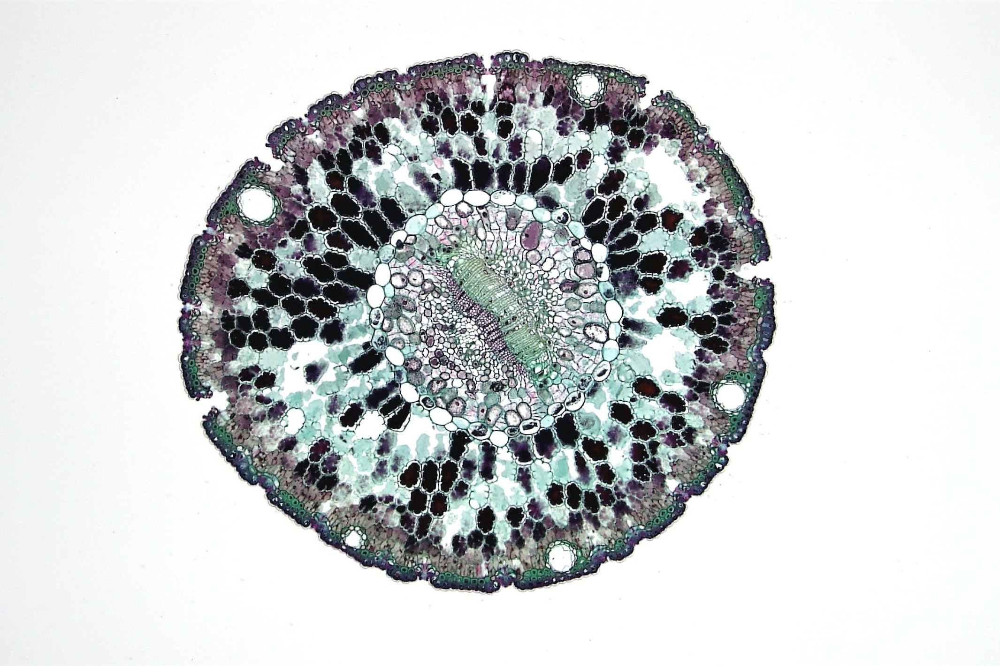

Introduction
.jpg) Michael Fouts is an accomplished Data Scientist and Engineer with over 5 years of industry expereince. Michael's passion is for tackling problems at the intersection of these two domains. On this website, you can view the story of his career so far as well as a searchable repository of his portfolio and skills.
Michael Fouts is an accomplished Data Scientist and Engineer with over 5 years of industry expereince. Michael's passion is for tackling problems at the intersection of these two domains. On this website, you can view the story of his career so far as well as a searchable repository of his portfolio and skills.
Below are some select personal projects to show the tools and skills Michael has used in his Data Science Career. All projects can be viewed on the Project Portfolio Tab or on his GitHub Page.
This project takes Microsoft Azure's predictive maintenance dataset and creates a digital twin of the equipment to identify system anomalies and evaluates the economics of multiple approaches.
Technologies Used: Python (PyTorch (MLP), SysIdentPy (NARX), TensorFlow (LSTM), scikit-learn, scipy), Advanced Statistics, Neural Networks

This project uses a Markov Chain Monte Carlo technique to assess three proposed models of substrate binding of WISP1 to Collagen I in the context of Breast Cancer Metastasis.
Technologies Used: R (ggplot2, Bolstad2), MCMC (Metropolis-Hastings, Gelman-Rubin), Biology (Model Proposals)

This project collects fundamental data for stocks in the S&P 500, performs an analysis on the metrics, and creates a supervised regression and classification ML model as well as a k-means unsupervised clustering.
Technologies Used: Python (pandas, beautiful soup, XGBoost, scikit-learn, seaborn), Yahoo! Finance API, Web Scraping, Machine Learning

This project was developed to identify high quality data sources about global power generation and analyze it to help others easily understand differences in countries' energy portfolios.
Technologies Used: Python (choropleth maps, plotly), Energy (Power Generation, Biomass Production), Geolocation (FIPS)

This project analyzes the musical content (based on Spotify ML Features) and lyrics to glean insights on how I can write and produce better music of my own.
Technologies Used: Python (pandas), R (ggplot2, tidytext, dplyr), NRC Sentiment/Emotion Analysis, Spotify API, Genius API
This project completes an NLP analysis to glean insights from financial advice PDFs found on the internet and serve as a framework to quickly analyze any corpus.
Technologies Used: Python (k-means clustering, TF-IDF, Word Clouds), Machine Learning, NLP (Natural Language Processing), PDF parsing